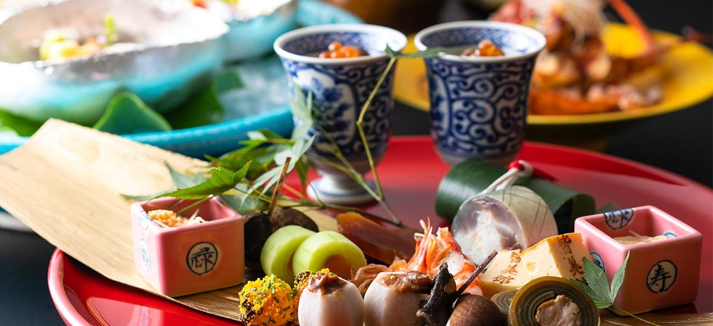
| 営業時間 | 昼 11:30〜15:00（L.O. 平日14:00／土日祝14:30）、夜 17:30〜21:00（L.O.20:00） |
|---|---|
| 定休日 | 毎週火曜日（祝祭日は営業） |
| 住所 | 島根県松江市末次本町14 |
| 予約 | 可（予約推奨） — ☎ 0852-21-5131 ／ 公式サイト |
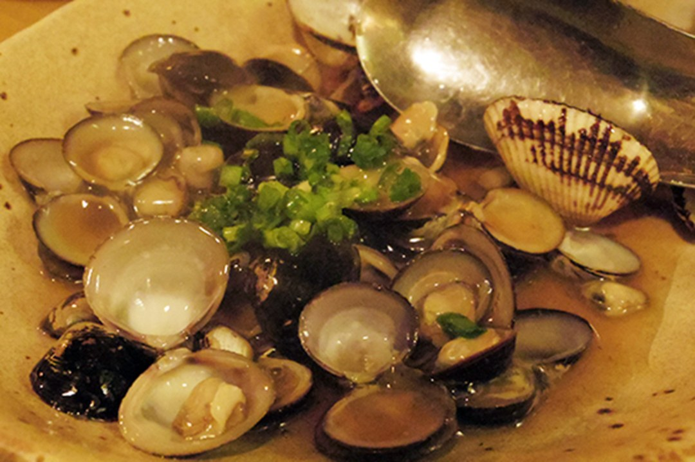
| 営業時間 | 18:00〜22:30 |
|---|---|
| 定休日 | 日曜（日曜が祝日の場合は月曜） |
| 住所 | 島根県松江市末次本町65 |
| 予約 | 要予約（カウンター15席のみ。電話で早めに） — ☎ 0852-22-1312 |
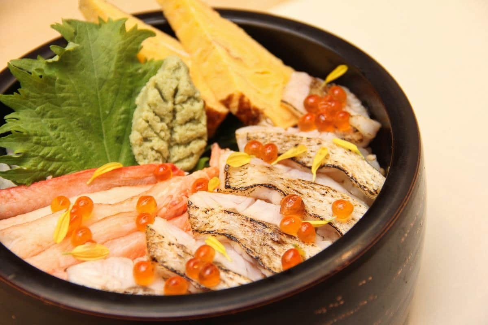
| 営業時間 | 11:30〜13:30 / 18:00〜22:00（L.O.21:30） |
|---|---|
| 定休日 | 日曜・祝日 |
| 住所 | 島根県松江市東本町1-61-4 |
| 予約 | 可（電話のみ。個室は昼も予約可） — ☎ 0852-23-4490 ／ 公式サイト |
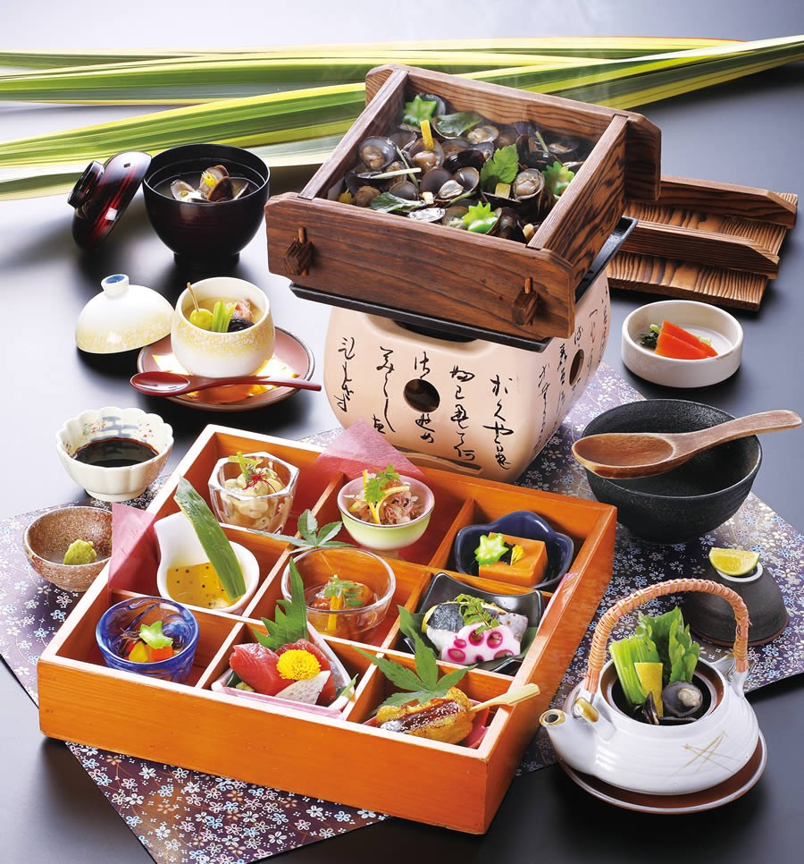
| 営業時間 | 昼 11:30〜15:00（L.O.14:00）／夜 17:30〜22:00（L.O.21:00） ※祝日・祝前日の昼は11:30〜14:00 |
|---|---|
| 定休日 | 火曜日 |
| 住所 | 島根県松江市御手船場町565 |
| 予約 | 可（電話・ネット。人気の品は予約推奨） — ☎ 0852-21-0029 ／ 公式サイト |
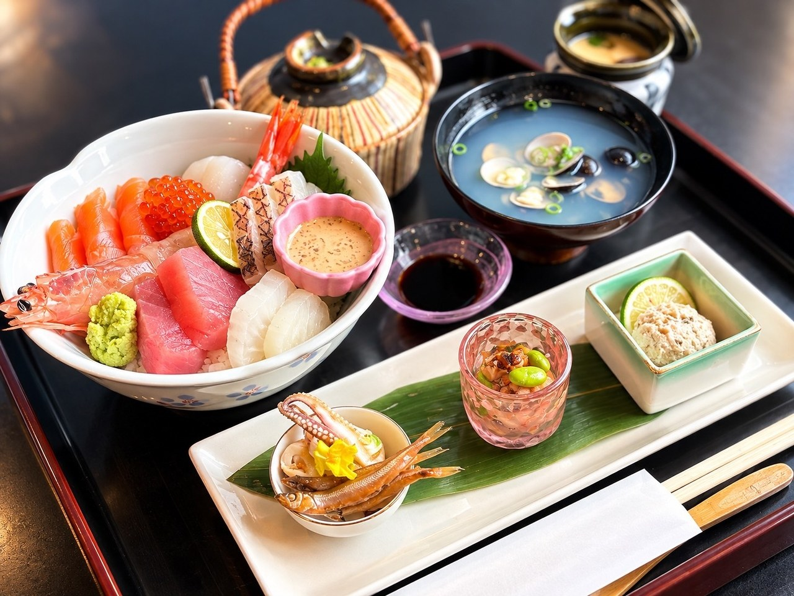
| 営業時間 | 月・日・祝日・祝前日 17:30〜22:00（料理L.O.21:00／ドリンクL.O.21:30）／水〜土 11:30〜14:00（料理L.O.13:30）、17:30〜22:00（料理L.O.21:00） |
|---|---|
| 定休日 | 火曜日（ほかに不定休あり） |
| 住所 | 島根県松江市寺町198-61 寺町プラザ南1階 |
| 予約 | 可（ネット・電話。営業時間外は080-2947-7028） — ☎ 0852-25-5710 |
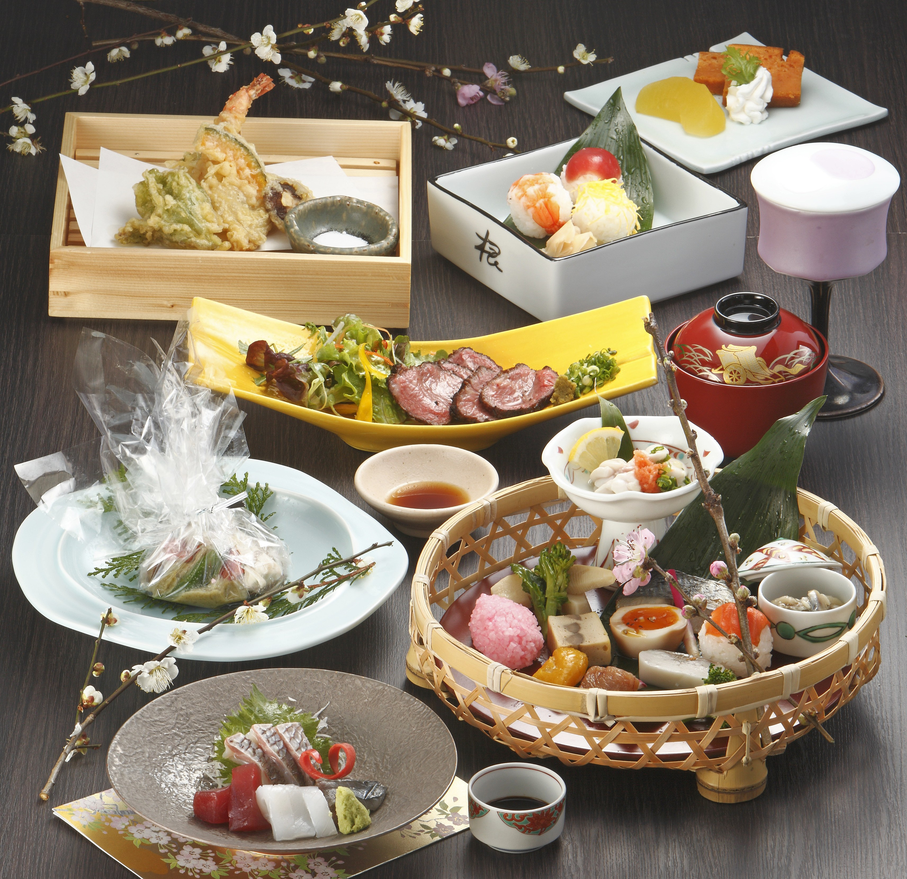
| 営業時間 | ランチ 11:00〜14:30（L.O.14:00）／ディナー 17:00〜21:00（L.O.20:30） |
|---|---|
| 定休日 | 年末年始（ほかに臨時定休日あり） |
| 住所 | 島根県松江市千鳥町36 宍道湖しじみ館2F |
| 予約 | 可（電話・WEB予約） — ☎ 0852-28-7511 ／ 公式サイト |
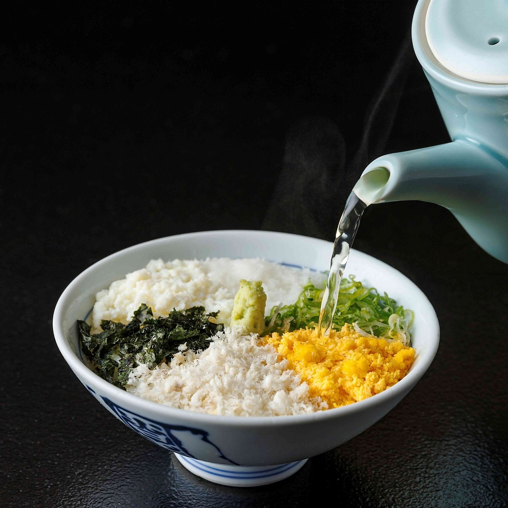
| 営業時間 | 昼の部 11:00〜15:00（L.O.14:30／平日14:00）／夜の部 17:00〜21:30（L.O.21:00）※夜は完全予約制 |
|---|---|
| 定休日 | 水曜日・年末 |
| 住所 | 島根県松江市玉湯町布志名21-1 |
| 予約 | 可（夜は完全予約制。電話・WEB予約） — ☎ 0852-62-0227 ／ 公式サイト |
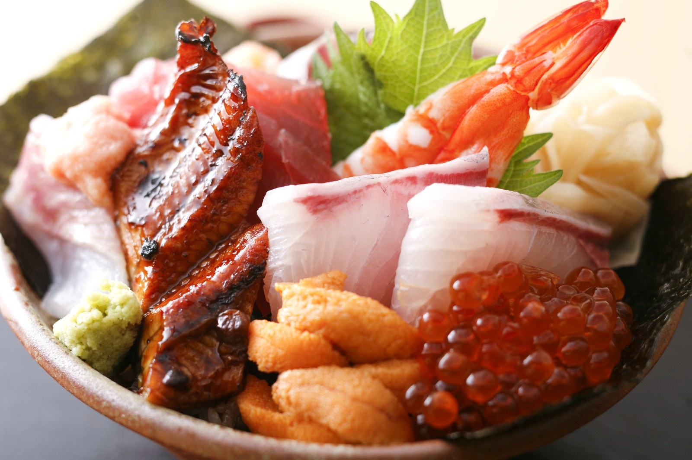
| 営業時間 | 昼 11:30〜13:30（L.O.）／夜 17:30〜19:30（L.O.） |
|---|---|
| 定休日 | 木曜日 |
| 住所 | 島根県松江市玉湯町玉造83-6 |
| 予約 | 可（電話） — ☎ 0852-62-0831 ／ 公式サイト |
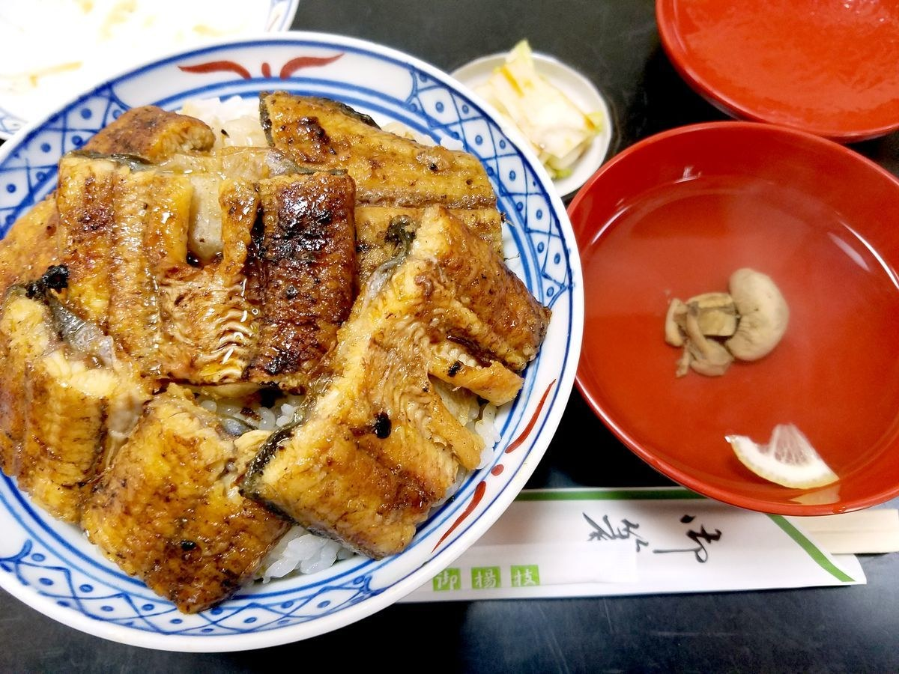
| 営業時間 | 11:00〜13:00 |
|---|---|
| 定休日 | 水曜日・日曜日 |
| 住所 | 島根県松江市東本町1-87 |
| 予約 | 不可（席数が少なく、売り切れ次第終了） — ☎ 0852-21-4042 |
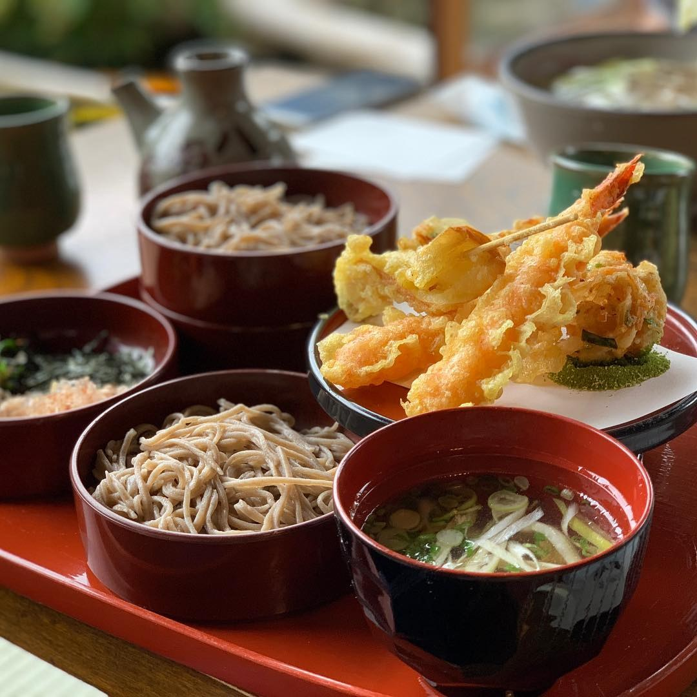
| 営業時間 | 10:30〜13:30（そばが無くなり次第終了する場合あり。松江観光協会の掲載は11:00〜13:30） |
|---|---|
| 定休日 | 木曜（ほかに2026年9月23日(水)・10月30日(金)が店休。1月1日・2日休み＝松江観光協会） |
| 住所 | 島根県松江市北堀町308 |
| 予約 | 一部可（13名以上の予約は受け付けていない＝公式サイト） — ☎ 0852-22-2400 ／ 公式サイト |
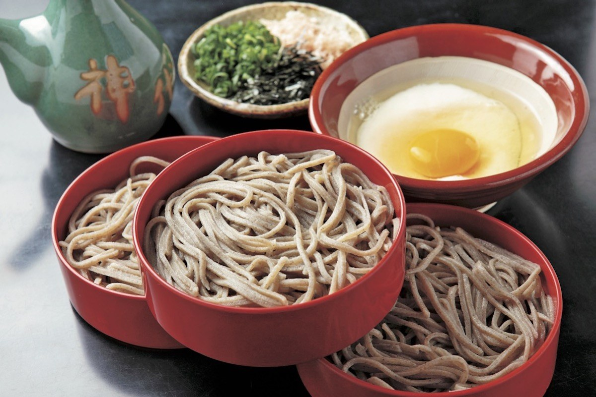
| 営業時間 | 11:00〜15:00（ラストオーダー14:30。製粉の都合で早く閉店することがある＝松江そば組合。松江観光協会は11:00〜14:00・そば売切れ次第閉店と記載） |
|---|---|
| 定休日 | 水曜 |
| 住所 | 島根県松江市奥谷町324-5 |
| 予約 | 未確認 — ☎ 0852-21-4866 |
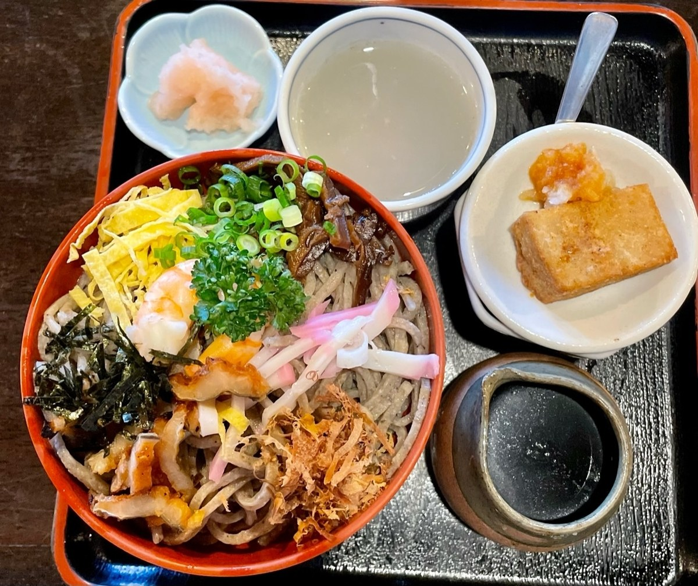
| 営業時間 | 11:00〜15:00（材料がなくなり次第終了＝松江そば組合。松江観光協会は11:00〜14:30と記載） |
|---|---|
| 定休日 | 月曜・第3火曜（年始・ゴールデンウィークも休み） |
| 住所 | 島根県松江市外中原町117-6 |
| 予約 | 未確認 — ☎ 0852-22-2361 |
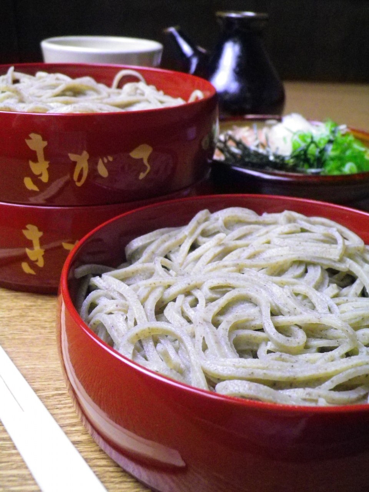
| 営業時間 | 月・水〜土 11:00〜15:30／木〜土 17:00〜20:00／日・祝 11:00〜17:00（そばが無くなり次第、早めに閉店することあり＝松江そば組合・松江観光協会） |
|---|---|
| 定休日 | 火曜・第3水曜（変更あり） |
| 住所 | 島根県松江市石橋町400-1 |
| 予約 | 未確認（ホットペッパーグルメではネット予約を受け付けていない） — ☎ 0852-21-3642 ／ 公式サイト |
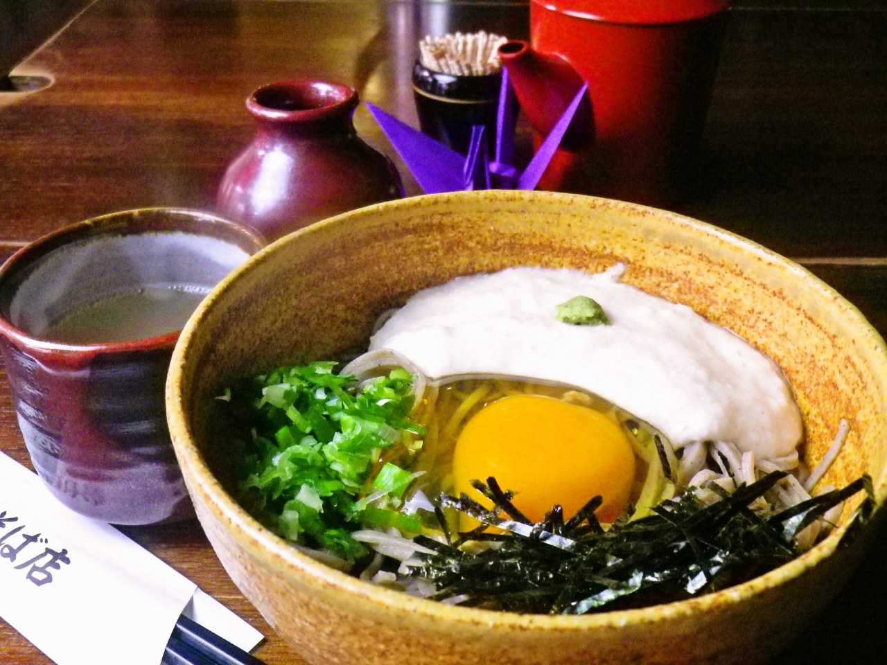
| 営業時間 | 11:00〜15:00（松江観光協会は11:00〜16:00と記載） |
|---|---|
| 定休日 | 火曜（祝日の場合は営業）・第2水曜・年末年始 |
| 住所 | 島根県松江市白潟本町43 スティックビル1F |
| 予約 | 未確認（ホットペッパーグルメではネット予約を受け付けていない） — ☎ 0852-28-7131 |
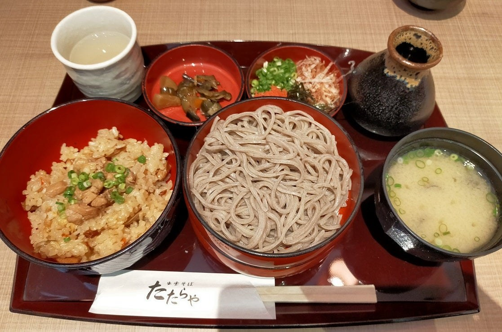
| 営業時間 | 11:00〜15:00（松江そば組合）／松江観光協会は11:00〜20:30(ラストオーダー20:00)と記載。記載が食い違うため来店前に電話で確認を |
|---|---|
| 定休日 | 不定休（シャミネ松江に準ずる） |
| 住所 | 島根県松江市朝日町伊勢宮472-2 |
| 予約 | 未確認 — ☎ 0852-61-3750 |
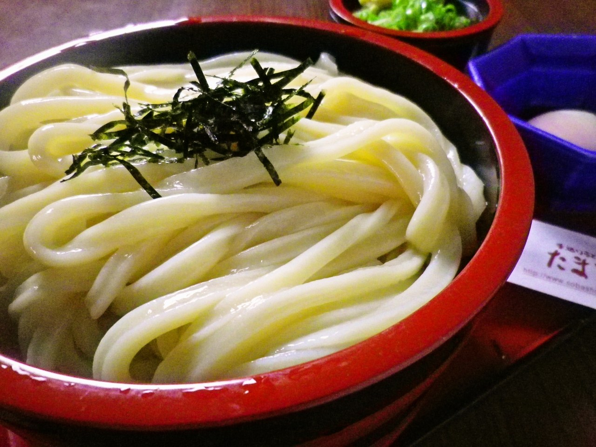
| 営業時間 | 11:00〜20:30（ラストオーダー20:00＝公式サイト） |
|---|---|
| 定休日 | 木曜（年末年始の定休日は要問い合わせ＝ホットペッパーグルメ） |
| 住所 | 島根県松江市学園1-6-3 |
| 予約 | 未確認（ホットペッパーグルメではネット予約を受け付けていない） — ☎ 0852-27-1531 ／ 公式サイト |
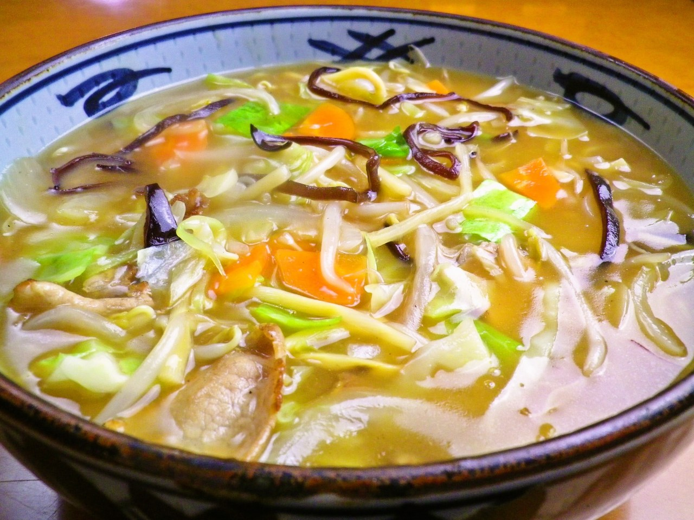
| 営業時間 | 11:00〜22:00（料理L.O. 21:30） |
|---|---|
| 定休日 | なし（年中無休） |
| 住所 | 島根県松江市黒田町469-2 |
| 予約 | 不要（席のみ・大人数は電話で相談） — ☎ 0852-27-4600 |
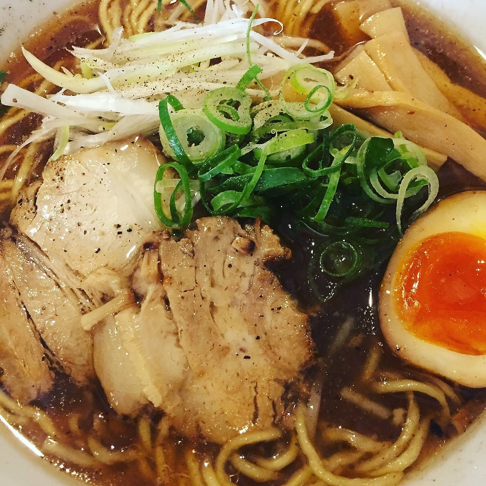
| 営業時間 | 11:00〜14:00（料理L.O. 13:30）／17:30〜20:00（料理L.O. 19:30。予約は19時まで受付） |
|---|---|
| 定休日 | 水曜 |
| 住所 | 島根県松江市殿町333-4 |
| 予約 | 可（ネット予約・電話予約とも可。10名以上の貸切は要相談） — ☎ 0852-23-2117 |
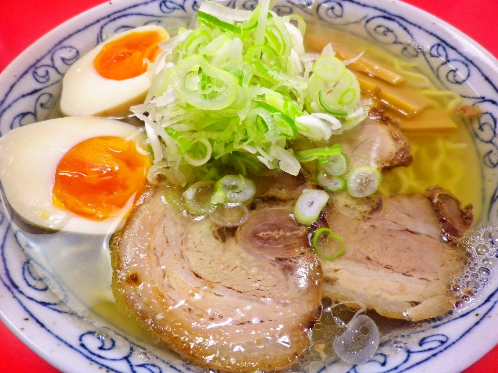
| 営業時間 | 9:00〜15:00（まいぷれ[松江]2025年8月取材・島根ラーメン探訪Award 2026年3月の記載とも一致） |
|---|---|
| 定休日 | 第2・第4月曜日 |
| 住所 | 島根県松江市上乃木4-21-18 |
| 予約 | 不要（宴会は不可） — ☎ 0852-25-1870 |
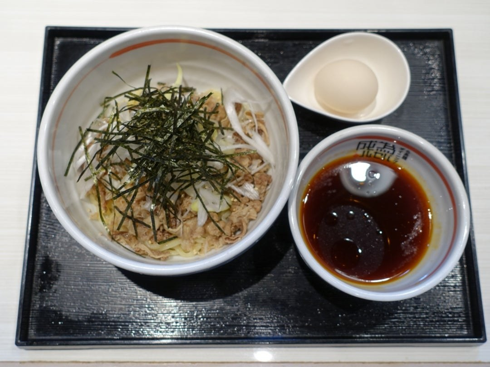
| 営業時間 | 10:30〜22:00（L.O. 21:30）※シャミネ松江の公式ショップページの「現在」の表示。同サイトのお知らせ（2024年9月27日）は「10月1日〜当面の間 11:00〜21:00（L.O.20:30）」としており記載が分かれるので、行く前に電話で確認を |
|---|---|
| 定休日 | なし（シャミネ松江の休館日に準じる） |
| 住所 | 島根県松江市朝日町伊勢宮472-2 シャミネ松江 食の専門館 |
| 予約 | 不可 — ☎ 0852-67-5840 ／ 公式サイト |
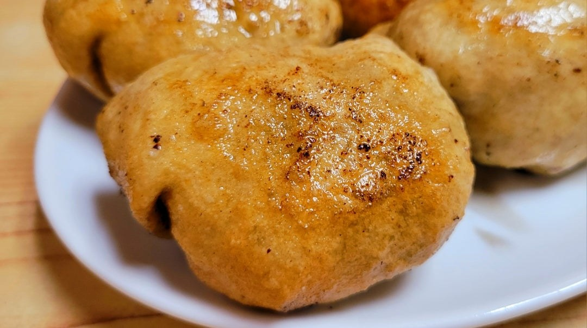
| 営業時間 | 12:00〜14:00／17:00〜22:00 |
|---|---|
| 定休日 | 日曜 |
| 住所 | 島根県松江市伊勢宮町538 |
| 予約 | 不要（カウンター6席・小上がり12席） — ☎ 0852-28-2202 |
| 営業時間 | 11:30〜14:00／17:30〜22:00（松江観光協会の掲載）。ホットペッパーグルメの掲載では11:30〜15:00（L.O.14:30）／17:30〜23:00（L.O.22:30）となっており、記載が分かれる |
|---|---|
| 定休日 | 火曜日（松江観光協会の掲載。ホットペッパーグルメは「不定休」としており記載が分かれる） |
| 住所 | 島根県松江市末次本町79 |
| 予約 | 可（2階に宴会席28名分あり。電話で相談） — ☎ 0852-25-7588 |
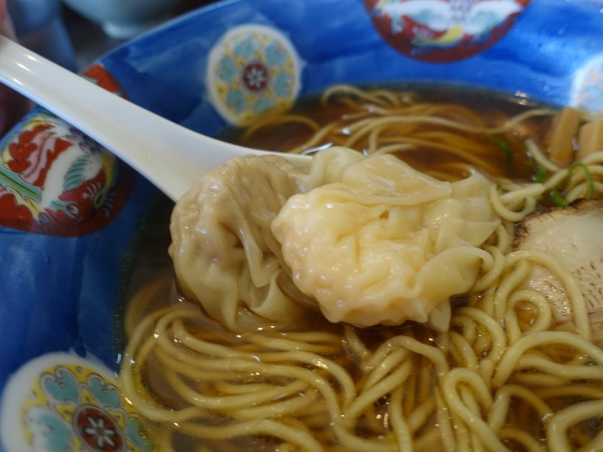
| 営業時間 | 11:00〜14:45／17:30〜20:30（月曜〜木曜）。金・土・日・祝は昼のみ 11:00〜14:45（いずれもラストオーダー。スープがなくなり次第終了する日もある） |
|---|---|
| 定休日 | 第2・第4月曜日と第2・第4火曜日 |
| 住所 | 島根県松江市学園2-9-3 |
| 予約 | 不可（カウンター8席のみ） — ☎ 0852-67-2157 |
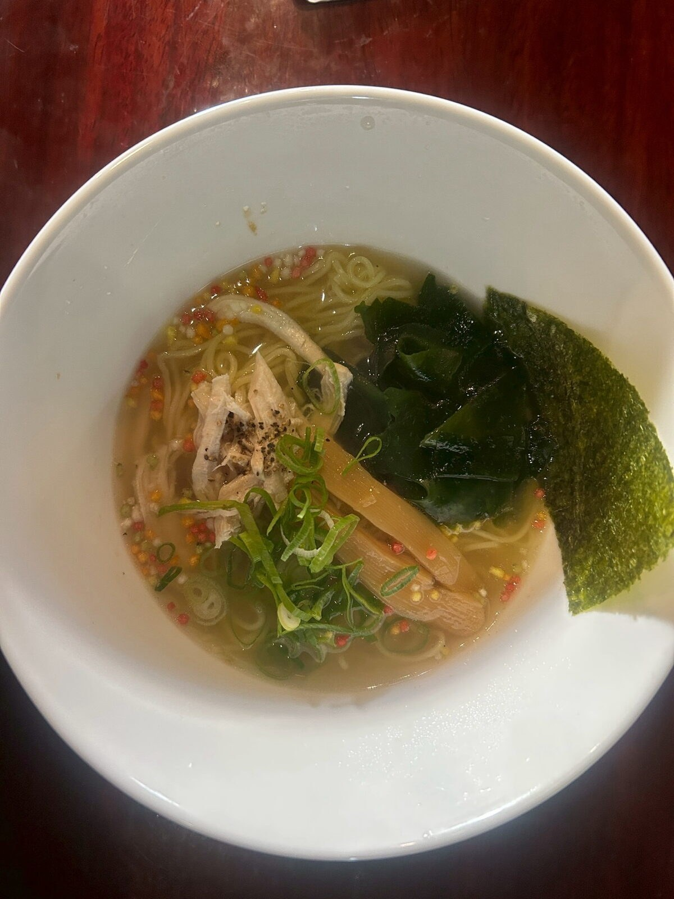
| 営業時間 | 火曜・木曜 23:00〜翌4:00／金曜・土曜 21:00〜翌5:00（まいぷれ[松江]の店舗ページ）。同サイトの新店記事では金・土は19:00〜翌5:00とあり記載が分かれるので、行く前にInstagramで確認を |
|---|---|
| 定休日 | 日曜・月曜・水曜 |
| 住所 | 島根県松江市伊勢宮町535-40 |
| 予約 | 不要（9席。最大13名の貸切は相談可） — 公式サイト |
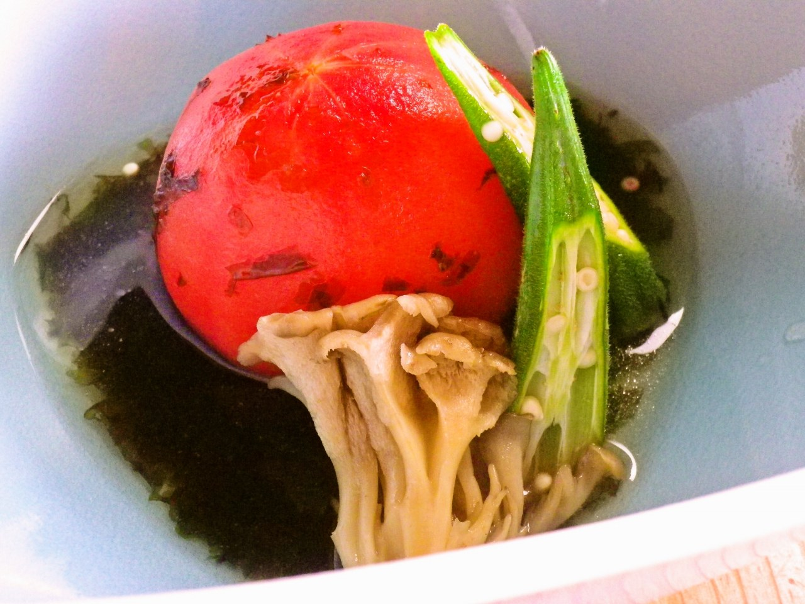
| 営業時間 | ランチ 11:30〜14:00（L.O.13:30）／ディナー 17:00〜21:30（L.O.21:00） |
|---|---|
| 定休日 | 年末年始のみ（ほかは無休） |
| 住所 | 島根県松江市伊勢宮町542-6 |
| 予約 | 可（貸切は60名〜。フロア貸切も可） — ☎ 0852-24-2060 ／ 公式サイト |
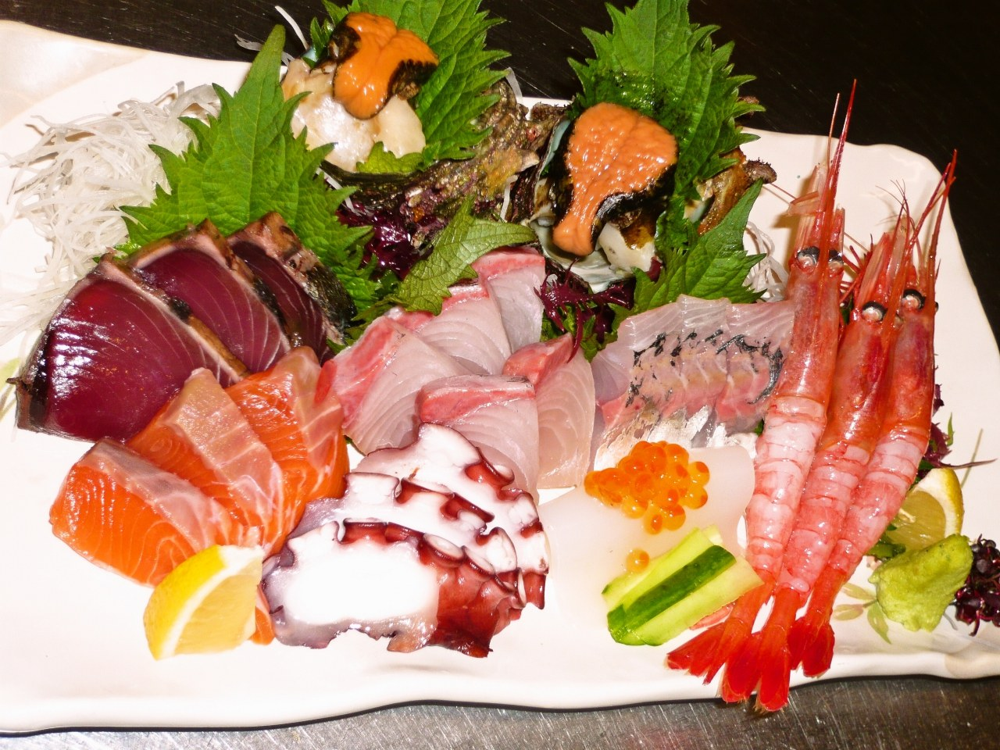
| 営業時間 | 月〜土・祝日・祝前日 17:00〜23:00（料理L.O.22:00／ドリンクL.O.22:30） |
|---|---|
| 定休日 | 日曜 |
| 住所 | 島根県松江市伊勢宮町544-9 |
| 予約 | 可 — ☎ 0852-28-0888 |
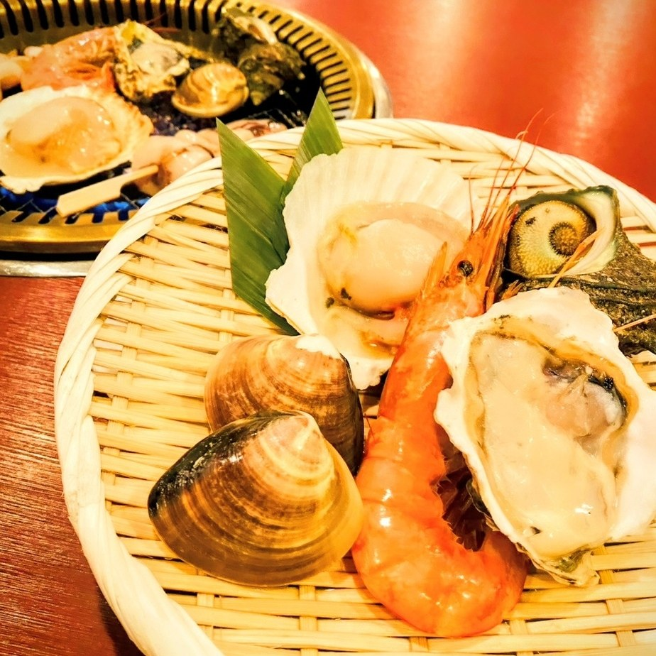
| 営業時間 | 月〜土・祝日・祝前日 17:00〜23:30（料理L.O.22:30／ドリンクL.O.23:00）／日曜 17:00〜23:00（料理L.O.22:00／ドリンクL.O.22:30） |
|---|---|
| 定休日 | 記載なし（ホットペッパーの定休日欄に休業日の記載なし。月曜が祝日の場合は日曜も23:30まで営業） |
| 住所 | 島根県松江市伊勢宮町519-24 |
| 予約 | 可（ネット予約可） — ☎ 0852-61-6555 |
| 営業時間 | 月〜日・祝日・祝前日 17:00〜翌0:00（料理L.O.23:30／ドリンクL.O.23:30） |
|---|---|
| 定休日 | 無休（大晦日・元旦を除く） |
| 住所 | 島根県松江市伊勢宮町501-32 |
| 予約 | 可（貸切可・最大50名） — ☎ 0852-67-3000 |
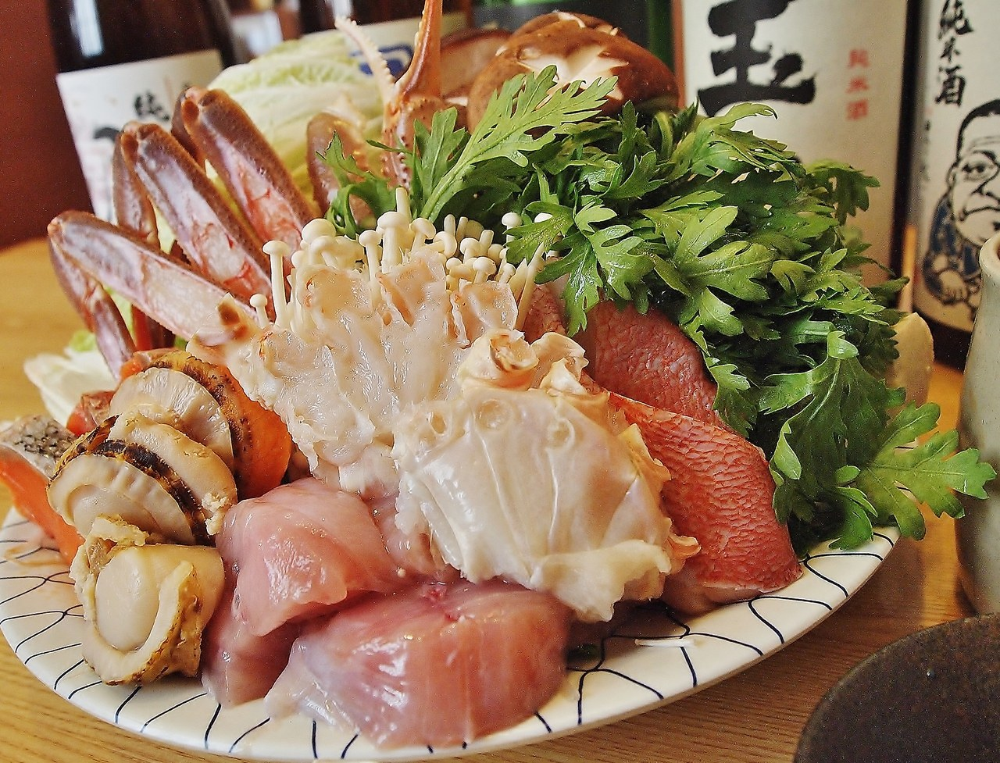
| 営業時間 | 月〜日・祝日・祝前日 17:00〜23:00（料理L.O.22:00／ドリンクL.O.22:00） |
|---|---|
| 定休日 | 記載なし（連休の場合は営業し、連休の最終日に休むとホットペッパーに記載） |
| 住所 | 島根県松江市御手船場町568 |
| 予約 | 可（ネット予約可。80名以上の予約も相談可） — ☎ 0852-28-8115 |
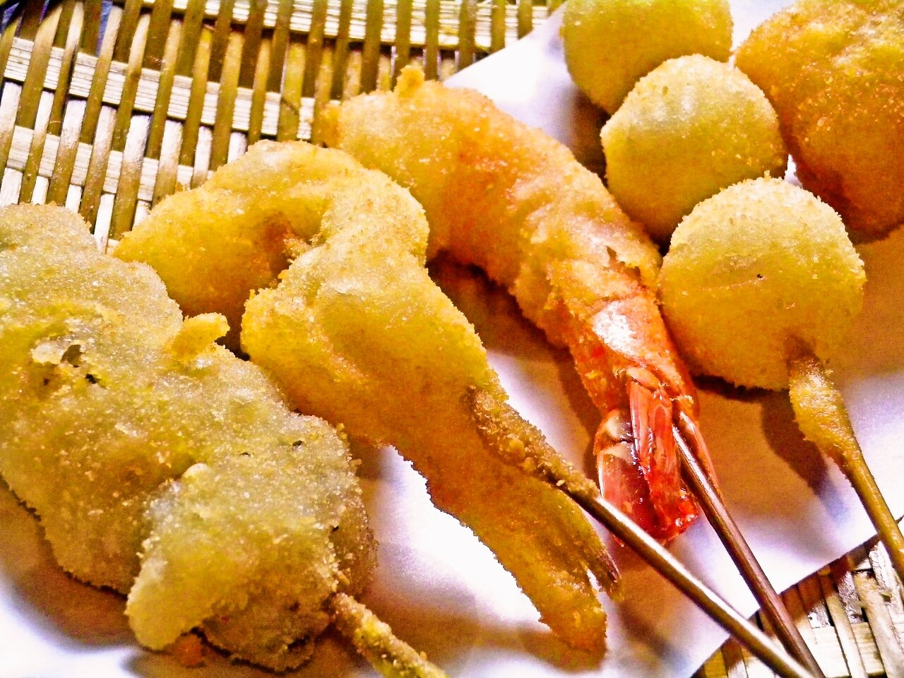
| 営業時間 | 月・水・木 17:30〜22:30（L.O.22:00）／金・土・祝前日 17:30〜23:00（L.O.22:30）／日・祝日 17:30〜22:00（L.O.21:30） |
|---|---|
| 定休日 | 火曜 |
| 住所 | 島根県松江市寺町205-3 |
| 予約 | 可（ネット予約可） — ☎ 0852-27-7717 |
| 営業時間 | 18:00〜翌1:00（料理L.O.翌0:00／ドリンクL.O.翌0:30） |
|---|---|
| 定休日 | 日曜、第1・第3月曜 |
| 住所 | 島根県松江市東本町1-29 |
| 予約 | 可（ネット予約可） — ☎ 0852-28-0210 |
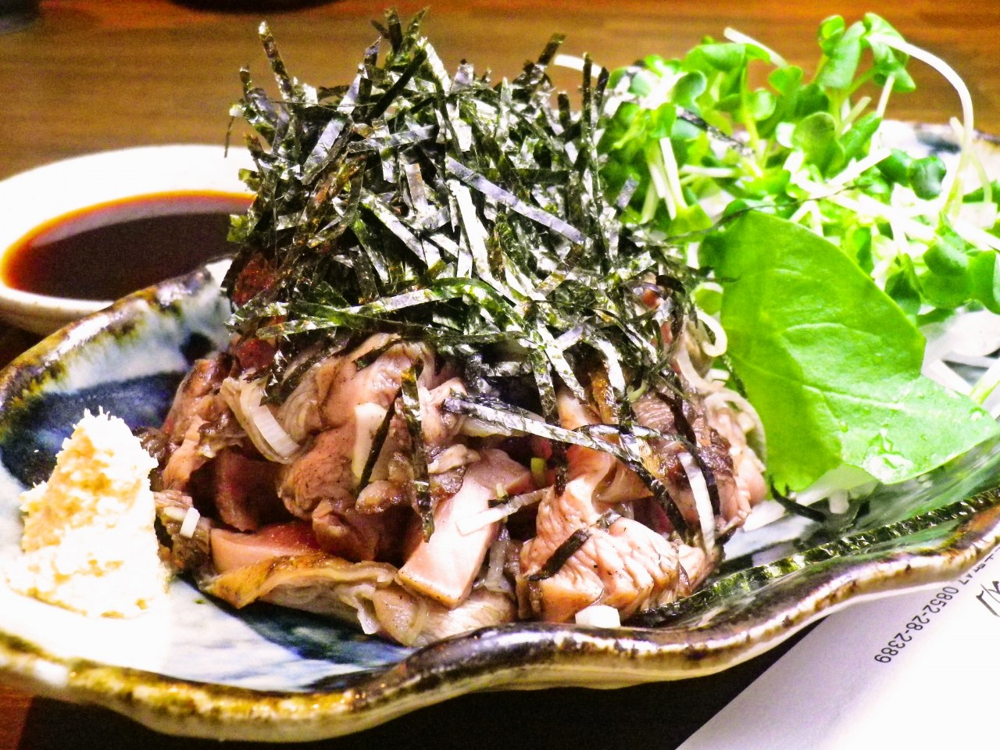
| 営業時間 | 月〜土・祝日・祝前日 18:00〜23:30（料理L.O.23:00／ドリンクL.O.23:00） |
|---|---|
| 定休日 | 日曜 |
| 住所 | 島根県松江市末次本町47 |
| 予約 | 可 — ☎ 0852-28-2389 |
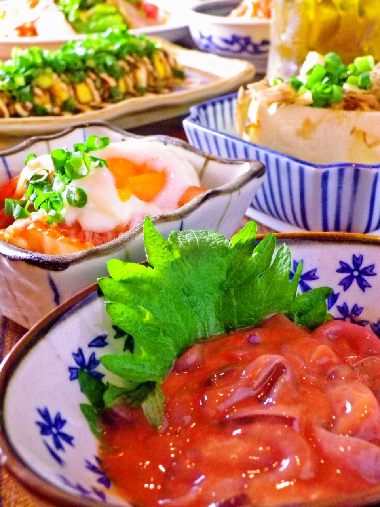
| 営業時間 | 月・土 17:00〜22:00（L.O.21:30）／火〜金 11:30〜13:30（L.O.13:00）と17:00〜22:00（L.O.21:30）／祝前日 11:30〜14:00（L.O.13:30）と17:00〜22:00（L.O.21:30） |
|---|---|
| 定休日 | 日曜・祝日 |
| 住所 | 島根県松江市内中原町8 |
| 予約 | 可（ネット予約可） — ☎ 0852-26-9409 |
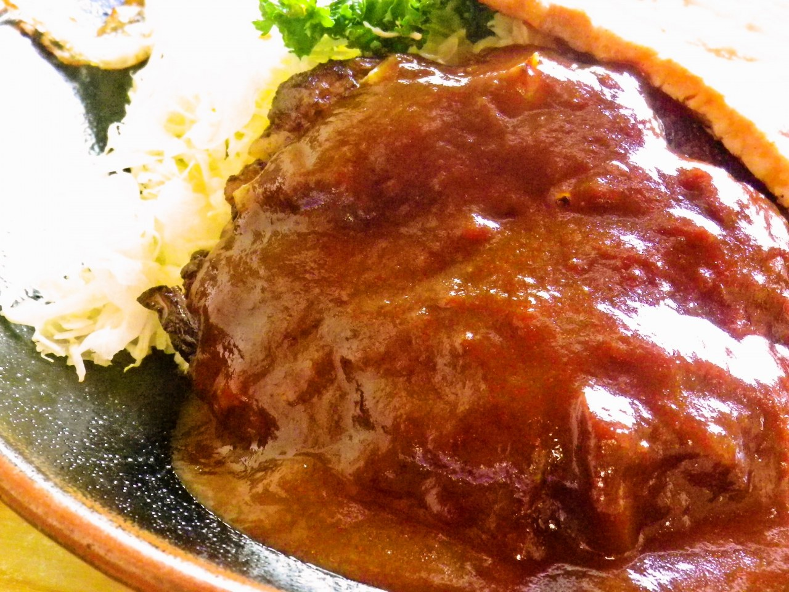
| 営業時間 | 11:30〜15:00／18:00〜21:00（都合により閉店が早まる場合あり） |
|---|---|
| 定休日 | 不定休 |
| 住所 | 島根県松江市母衣町18 |
| 予約 | 不可（ネット予約の受付なし） |
| 営業時間 | 11:30〜14:00（L.O.14:00）／17:30〜19:30（L.O.19:30） |
|---|---|
| 定休日 | 日曜（年末年始休） |
| 住所 | 島根県松江市片原町111 |
| 予約 | 未確認（まっぷる・ホットペッパーとも予約可否の記載なし） — ☎ 0852-22-3434 |
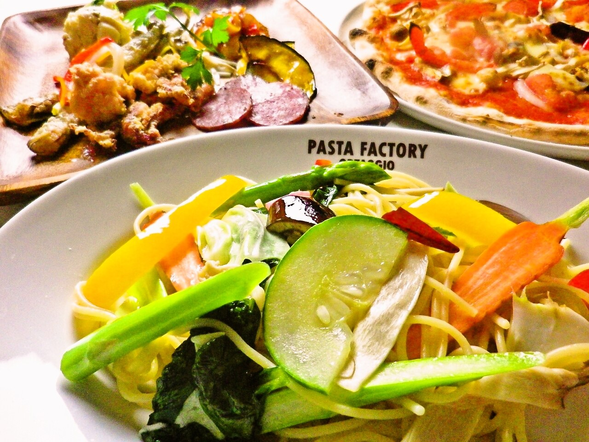
| 営業時間 | 月〜金 11:30〜14:30（L.O.14:00）／17:30〜22:15（料理L.O.21:45）、土 11:30〜15:00（L.O.14:30）／17:30〜22:15、日祝 11:30〜15:00／17:30〜21:30（料理L.O.21:00） |
|---|---|
| 定休日 | 不定休 |
| 住所 | 島根県松江市末次本町82 |
| 予約 | 可（ネット予約は来店日の3日前までリクエスト予約） — ☎ 0852-28-0101 ／ 公式サイト |
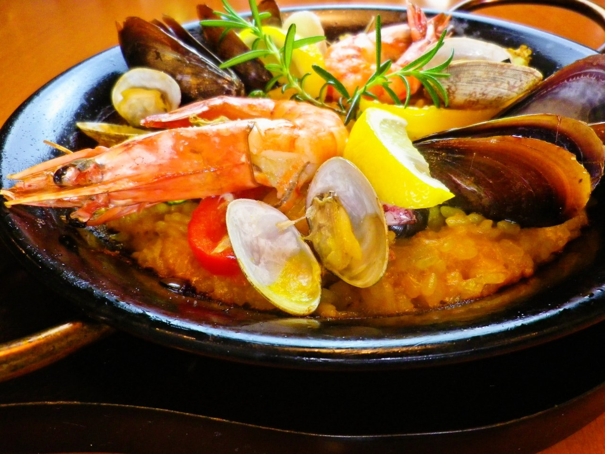
| 営業時間 | 11:30〜15:00（料理L.O.14:30）／18:00〜22:00（料理L.O.21:30） |
|---|---|
| 定休日 | 水曜 |
| 住所 | 島根県松江市殿町58 古井ビル1F |
| 予約 | 可（ネット予約は来店日の3日前までリクエスト予約） — ☎ 0852-24-7668 |
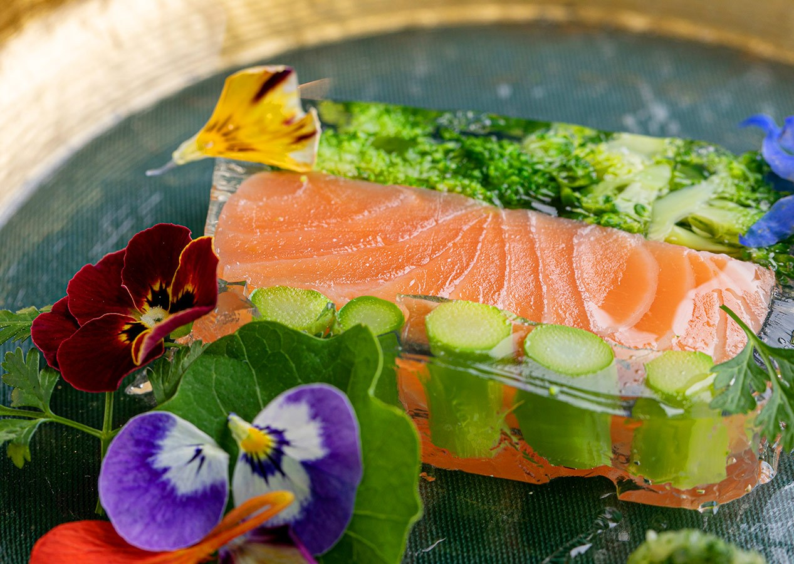
| 営業時間 | カフェ 10:00〜18:00／ランチ 11:00〜15:00／ディナー 17:00〜20:30（完全予約制）※美術館の開館時間に準じる |
|---|---|
| 定休日 | 火曜、年末年始（12月28日〜1月1日）※美術館の休館日に準じる |
| 住所 | 島根県松江市袖師町1-5 島根県立美術館内 |
| 予約 | 可（ディナーは完全予約制・前日まで） — ☎ 0852-25-6562 ／ 公式サイト |
| 営業時間 | 11:30〜14:30（料理L.O.14:10）／17:30〜22:30（料理L.O.22:20） |
|---|---|
| 定休日 | 火曜 |
| 住所 | 島根県松江市西茶町1-24 |
| 予約 | 一部可（10名以上の貸切は前日までに要予約） |
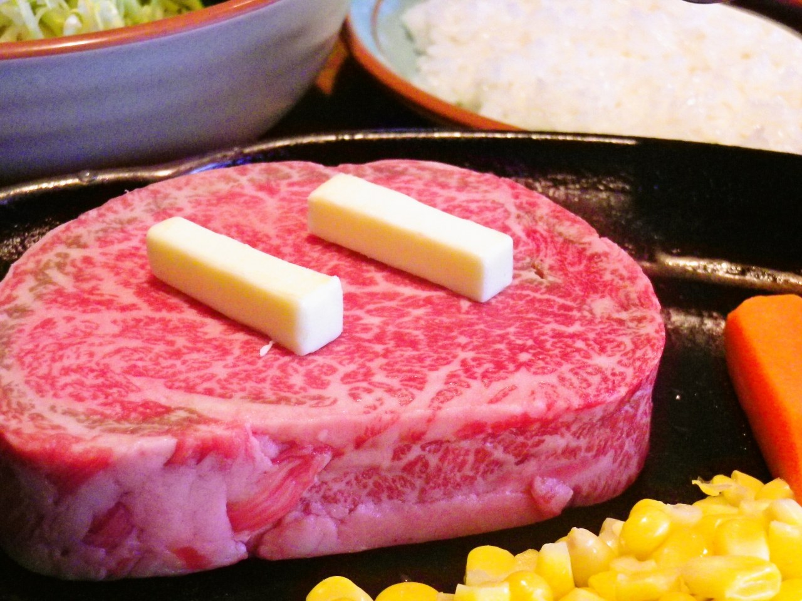
| 営業時間 | 月・火・木・金・祝前日 11:00〜15:00（料理L.O.14:15）／17:00〜21:40（料理L.O.21:00）、土日祝 11:00〜21:40（料理L.O.21:00） |
|---|---|
| 定休日 | 水曜 |
| 住所 | 島根県松江市東津田町1109-2 |
| 予約 | 可（電話。15名以上の貸切は要相談） — ☎ 0852-31-0338 |
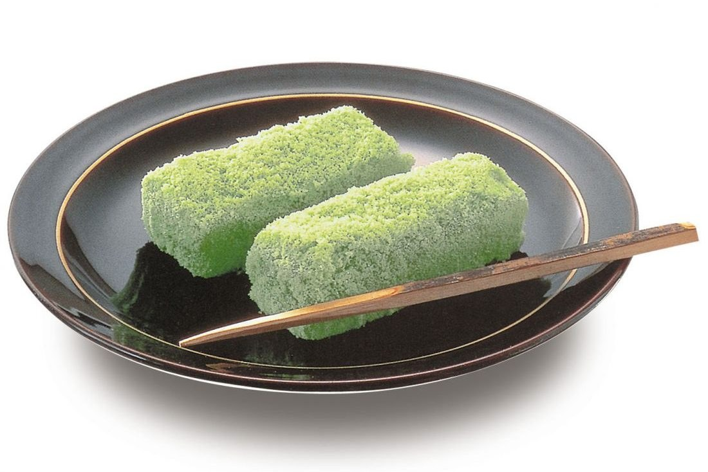
| 営業時間 | 9:00〜18:00（冬期1月は9:00〜17:00）／茶寮 10:00〜17:00（ラストオーダー16:30） |
|---|---|
| 定休日 | 不定休（公式サイトの月別休業日カレンダーで確認。2026年10月は休業日なし） |
| 住所 | 島根県松江市天神町124 |
| 予約 | 不要 — ☎ 0852-21-2727 ／ 公式サイト |
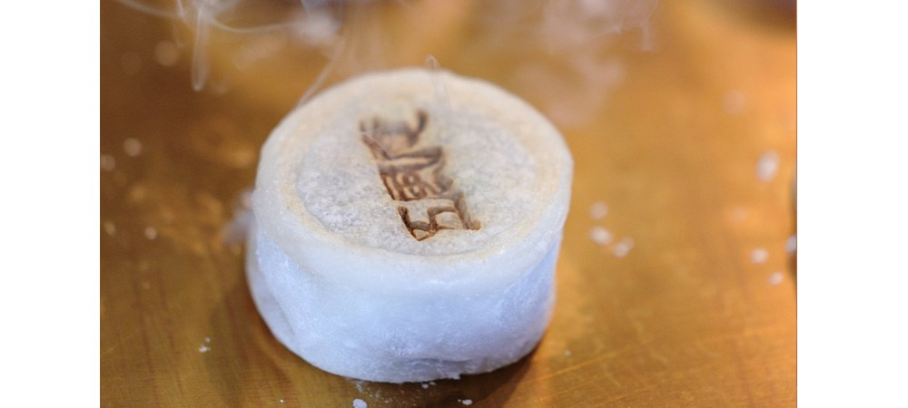
| 営業時間 | 10:00〜16:00（風流堂 寺町本店の売り場は9:00〜18:00） |
|---|---|
| 定休日 | 毎週水曜・木曜（風流堂 寺町本店の売り場は毎週水曜と1月1日） |
| 住所 | 島根県松江市寺町151 |
| 予約 | 不要 — ☎ 0852-21-3241 ／ 公式サイト |
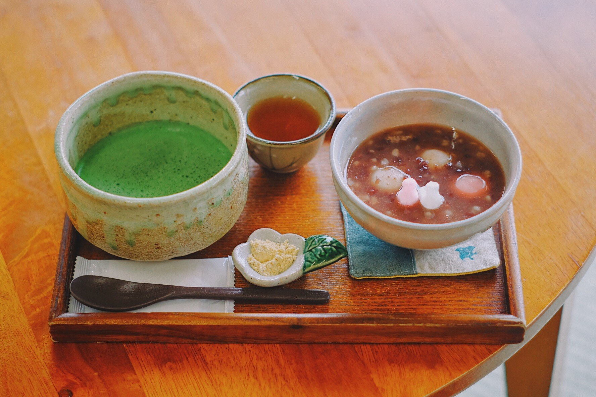
| 営業時間 | 平日 10:00〜17:00（ラストオーダー16:30）／土・日・祝 9:30〜17:00（ラストオーダー16:30） |
|---|---|
| 定休日 | 月曜（祝日の場合は翌平日）、年末年始（12/29〜1/1） |
| 住所 | 島根県松江市殿町279番地 |
| 予約 | 不要 — ☎ 0852-32-1607 ／ 公式サイト |
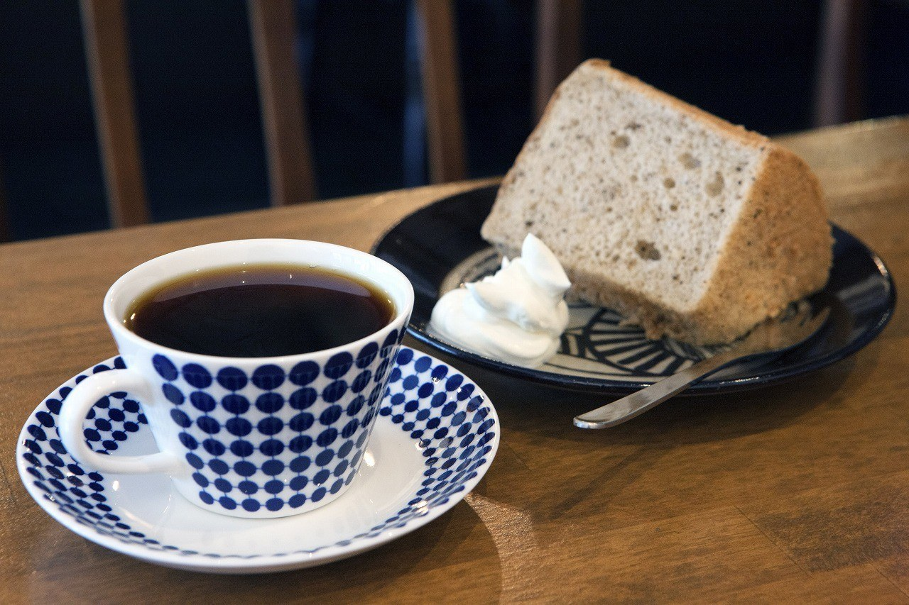
| 営業時間 | 11:00〜18:00 |
|---|---|
| 定休日 | 日曜・月曜 |
| 住所 | 島根県松江市殿町404 |
| 予約 | 不要 — ☎ 080-5615-8977 ／ 公式サイト |
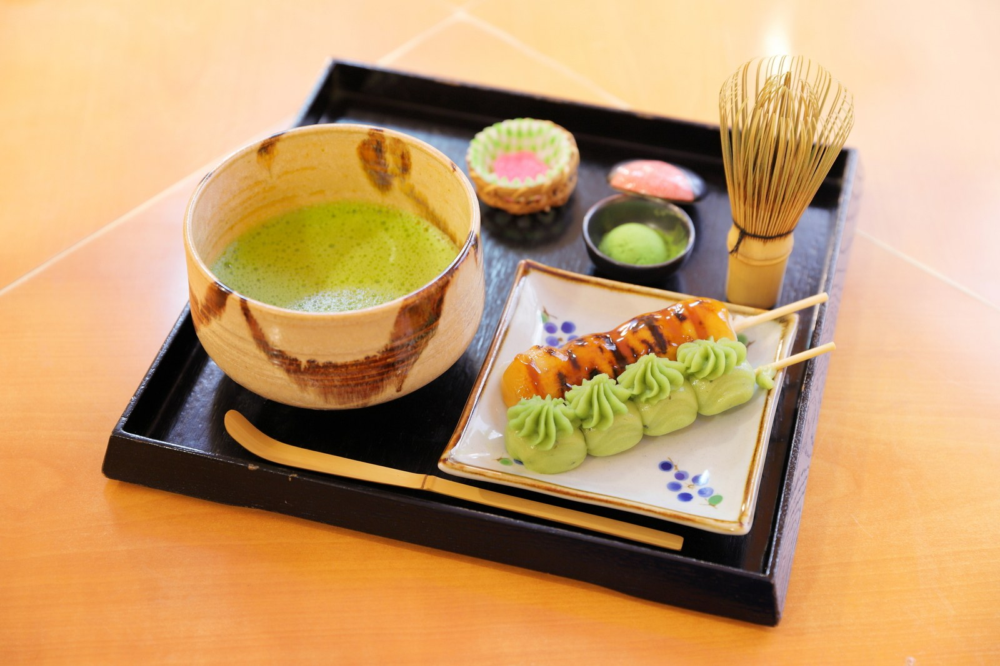
| 営業時間 | 10:00〜17:30（オーダーストップ17:00） |
|---|---|
| 定休日 | 毎週木曜 |
| 住所 | 島根県松江市末次本町87 |
| 予約 | 不要 — ☎ 0852-21-2497 ／ 公式サイト |
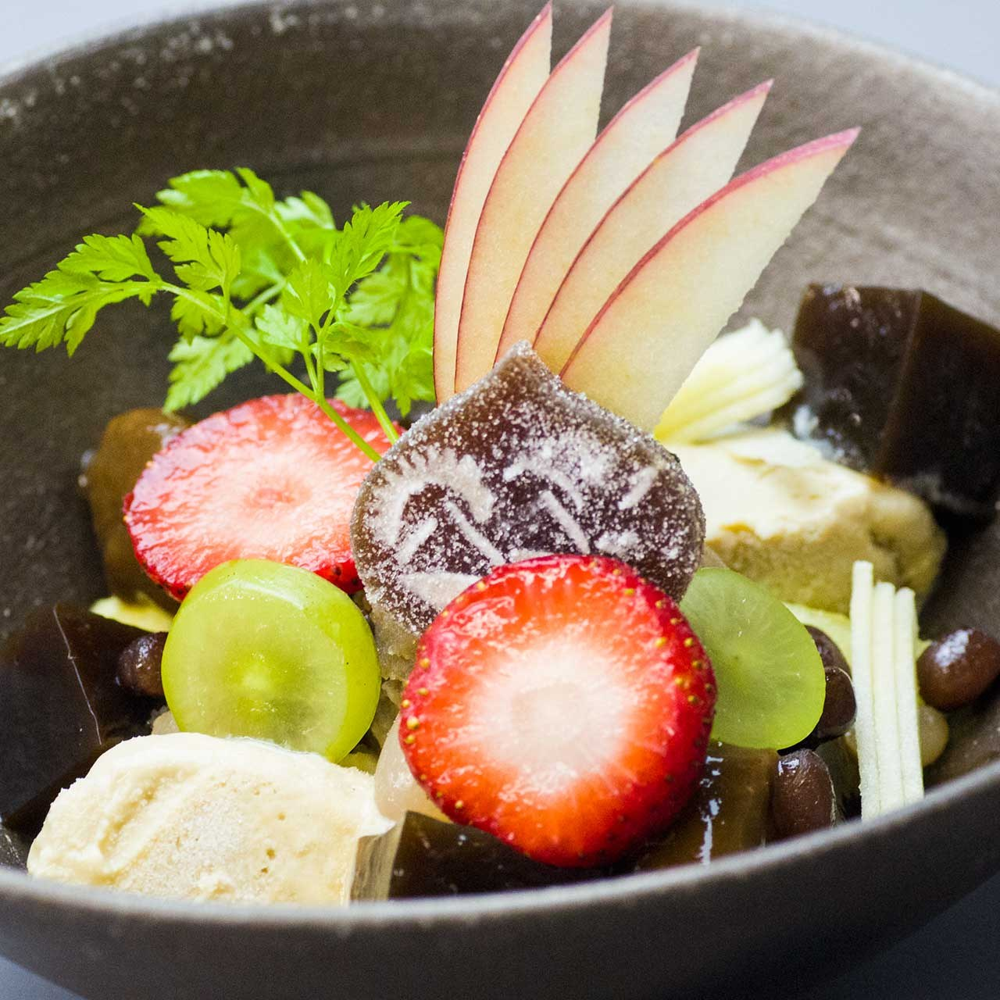
| 営業時間 | 9:00〜18:00 |
|---|---|
| 定休日 | 年中無休（元旦をのぞく） |
| 住所 | 島根県松江市袖師町11-1 |
| 予約 | 可（2階の茶室「かじゅある茶席」を使う茶会・茶事は要予約） — ☎ 0852-32-2345 ／ 公式サイト |
本ガイドは個人利用目的で作成。掲載情報は2026年10月時点の調査に基づく。写真出典: 各店の公式サイト・公式SNS、および地域情報サイト等の掲載写真（著作権は各サイト・各撮影者に帰属）。引用元は店ごとにカード内へ明記。